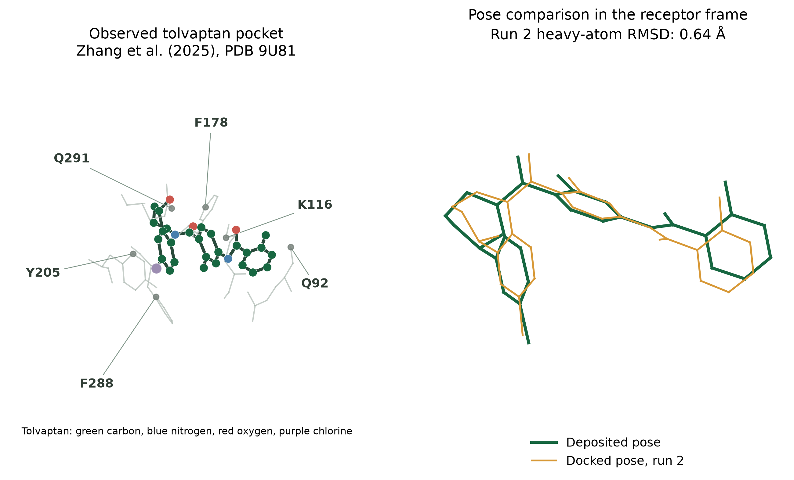
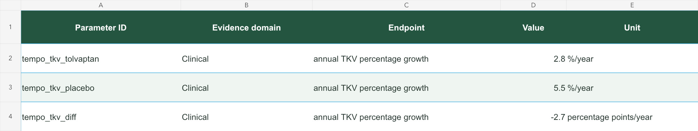

Understand the evidence for your drug.
DrugAdopt reviews the research on a drug in a particular disease. You receive a report, slide deck, and spreadsheet with the sources and analysis code.
We also offer custom analyses and build AI pipelines for preclinical and biomarker research.

A DrugAdopt case study
Follow a finding all the way to its source.
This example reviews tolvaptan for autosomal dominant polycystic kidney disease (ADPKD). Browse the report, slides, and spreadsheet below.
Example from October 2026. Click any page, slide, or table to enlarge it.
From report to source
Where the numbers come from.
Select a view to see the result in the report, slide deck, spreadsheet, or analysis code.

01 / Report
What the trial measured.
The report describes the study population and explains the changes in kidney size and filtration.
Report §1.1.2 · page 6
More report pages ↓
02 / Slides
The main trial findings.
The slide summarizes the adult trial results. Its footnote points to the full discussion in the report.
Slide deck · slide 8
More slides ↓
03 / Spreadsheet
Check the numbers.
Use the spreadsheet to look up the estimates, units, and study references.
Parameters sheet · rows 2–4
More spreadsheet views ↓orientation_efficacy_landscape.qmd#| label: fig-tempo-tkv
#| evidence: randomized_trial
#| sources: PMID 23121377, NCT00428948
import pandas as pd
import altair as alt
rows = pd.read_csv("raw/orientation/tempo_tkv.csv")
rows["axis_label"] = rows["arm"]04 / Code
Plotting the study results.
The Quarto file names the data and source study. The Python code below plots the published growth rates and their confidence intervals.
Quarto figure source · Python plotting code
Read the publication ↗See the Quarto and Python code
The trial publication reports the −2.7 estimate and its confidence interval. The code below plots the published growth rates for the two study groups.
Quarto figure source
orientation_efficacy_landscape.qmd · lines 14–23
```{python}
#| label: fig-tempo-tkv
#| fig-cap: "Annual total kidney volume (TKV) growth (%/year; point estimates and source-reported 95% confidence intervals) by randomized arm in TEMPO 3:4: adults aged 18–50 with baseline TKV ≥750 ml and estimated creatinine clearance ≥60 ml/min; three-year primary TKV endpoint, primary efficacy analysis N=1,307 of 1,445 randomized. Values from the TEMPO 3:4 publication (PMID 23121377), NCT00428948."
#| evidence: randomized_trial
#| sources: PMID 23121377, NCT00428948
import pandas as pd
import altair as alt
rows = pd.read_csv("raw/orientation/tempo_tkv.csv")
rows["axis_label"] = rows["arm"]Plotting calculation
plot_tempo_labels.py · lines 21–27
for y, row in enumerate(rows):
mean, lo, hi = (float(row[k]) for k in ('mean', 'ci_low', 'ci_high'))
ax.errorbar(mean, y, xerr=[[mean-lo], [hi-mean]], fmt='o',
color='#39718E', ms=7, capsize=4, lw=1.6)
ax.set(yticks=range(len(rows)), yticklabels=[r['arm'] for r in rows],
xlabel='Annual total kidney volume growth (%/year)',
ylabel='Treatment arm', xlim=(2, 6.4), ylim=(-.6, 1.6))The graph plots the published growth rates: 2.8% per year with tolvaptan and 5.5% per year with placebo. Each has its own confidence interval. The interval for the adjusted treatment effect is in Parameters!L4:M4.
01 / The report
Read the scientific report.
The report covers disease biology, drug action, clinical results, and safety. It explains how the studies were done and where the evidence is uncertain.
- Who was studied and what was measured
- Results and confidence intervals
- Methods and model assumptions


02 / The slide deck
Present the main findings.
Use the slides to discuss drug mechanism, clinical results, safety, and modeling with your team.
- Bold take-home messages
- Figures and short explanations
- Page references to the report


03 / The spreadsheet
Look up the data behind the findings.
The spreadsheet lists the results, units, and confidence intervals used in the report. Study references and analysis filenames help you check where each value came from.
- Results with units and confidence intervals
- Links to the studies
- Field definitions
We are taking on a small number of pilot assets. Data you share for a pilot stays on our private cloud and is never sent to third-party model APIs. How your data is handled.
What a DrugAdopt report covers
- Clinical phenotype and endpoints
- Mechanism and biomarker biology
- Pharmacology and exposure
- Toxicology and therapeutic window
- IP and competitive intelligence
Modalities we work on
- Small-molecule inhibitors
- Antibody-drug conjugates
- Biologics
- Real-world data biomarkers